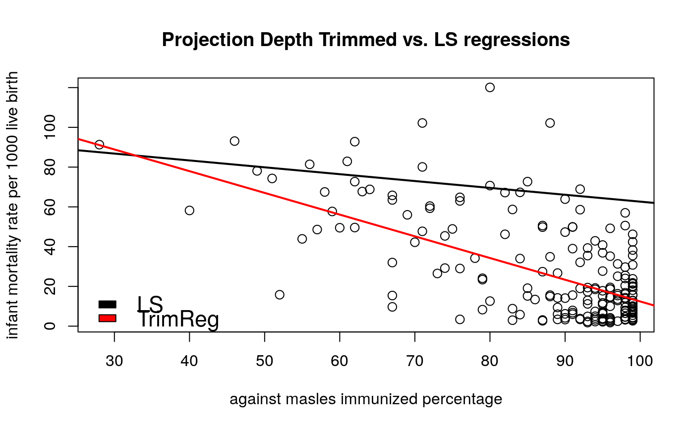
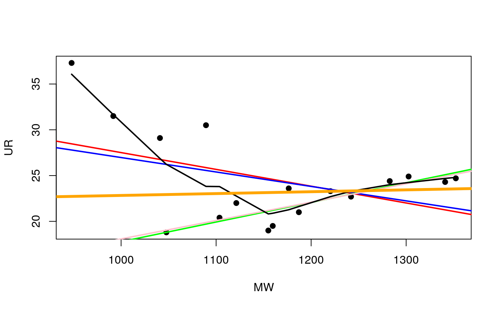

Computes projection trimmed regression in 2 dimensions.
trimProjReg2d(x, y, alpha = 0.1)
Arguments
| x | Independent variable |
|---|---|
| y | Dependent variable |
| alpha | Percentage of trimmed observations |
Examples
# EXAMPLE 2 data(under5.mort) data(inf.mort) data(maesles.imm) data2011 <- na.omit(cbind(under5.mort[, 22], inf.mort[, 22], maesles.imm[, 22])) x <- data2011[, 3] y <- data2011[, 2] plot(x, y, cex = 1.2, ylab = "infant mortality rate per 1000 live birth", xlab = "against masles immunized percentage", main = "Projection Depth Trimmed vs. LS regressions")##### Comparsion of a few regression methods ##### library(DepthProc) library(MASS) data("france") plot(UR ~ MW, pch = 19, data = france)# LMS lqs.lms <- lqs(UR ~ MW, method = "lms", data = france) #least median of squares# lqs.lts <- lqs(UR ~ MW, method = "lts", data = france) #least trimmed squares# abline(lqs.lms, lwd = 2, col="green")# Depth trimmed regression trim.reg <- trimProjReg2d(france$MW, france$UR) #trimprojreg2d abline(trim.reg, lwd = 4, col = 'orange')